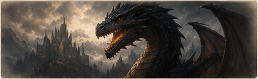
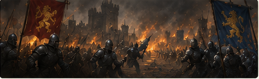
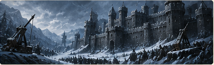
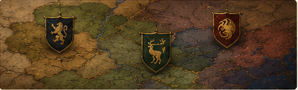
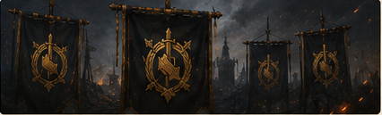

Allianz-Bibliothek
Veranstaltungsanleitungen
⌁ ◇ ⌁
Materialien und Leitfäden zu Allianzereignissen. Wähle ein Ereignis, um die ausführlichen Anleitungen zu öffnen.
Ereignis
Beschreibung
Ansehen →

♜
Lost Realm
Leitfaden zum Ereignis Lost Realm. Regeln, Bossbeschreibungen, Fähigkeiten und verfügbare Belohnungen.

⚔
KvK
Vollständiger Leitfaden zum KvK-Ereignis. Phasen, Strategie, Ziele und Punktesystem.

♜
Siege of Winterfell
Anleitung und Strategie für Siege of Winterfell. Verteidigung, Angriff, Belohnungen und wichtige Informationen.

♛
Alliance Conquest
Leitfaden zum Ereignis Alliance Conquest. Kartenregeln, Gebäude, Punkte und Verteilung der Belohnungen.

•••
Weitere Ereignisse folgen bald
Wir arbeiten an weiteren Materialien. Schau regelmäßig vorbei.
Bald
Material hinzufügen: kopiere eine Karte oben, ändere Titel und Beschreibung und füge anschließend einen Link zur Datei oder Seite hinzu.